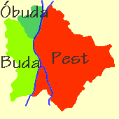
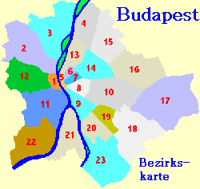
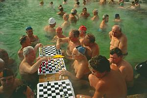
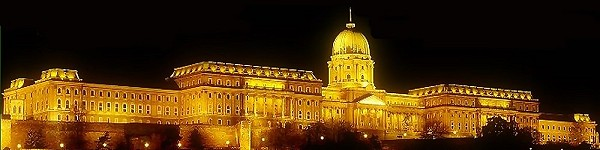
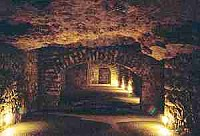

Die
Hauptstadt Ungarns ist immer eine Reise wert. Die Donaumetropole ist
eine architektonische Sehenswürdigkeit, steckt
voller Überraschungen und Besonderheiten und verfügt
sogar über ihr
eigenes Mittelgebirge mitten
im Stadtgebiet.

Das Wort Budapest gibt es
seit 1872, nach der Vereinigung dreier Städte - Pest, Buda und
Óbuda (Alt-Buda oder Alt-Ofen auf alten Karten).
Die
einzelnen Stadtbezirke sind historisch gewachsene Siedlungsgebiete.
Amtlich werden die Stadtbezirke mit römischen Ziffern
durchnummerieriert, für besseres Verständnis machen
wir es
hier mit den arabischen Zahlenziffern.
Budapest hatte am Ende der sozialistischen Ära im Jahre 1989
2,7 Millionen
Einwohner, rd. 20 Jahre später waren es nur noch 1,7
Millionen. Die Stadtflucht hängt mit dem besonders brutal
vollzogenen politischen Systemwechsel zusammen, aber auch die wachsende
Motorisierung der Bevölkerung trug dazu bei.

In der ersten Phase litt die Bevölkerung und die jeweils
aktuellen Stadtväter bereicherten sich durch
Privatisierung. Sozialistische
Arbeiterwohnheime wurden von den früheren sozialistischen
Parteibonzen angeregt dem Volk ohne
Entschädigung enteignet und von der
neu entstandenen
Hunguest Hotelkette in 2- und 3-Sterne-Hotels umgewandelt.
Diese Hotelgesellschaft ist entstanden aus der Verwaltung
der einstigen Gewerkschafts-Erholungsheime, ihre
Eigentümer sind aus den politisch geschickteren
Wendehälsen emporgekrochen. Weniger lukrative
Wohnheime
wurden abgerissen oder fielen neuen
Grundstücksspekulanten zum Opfer.
Das geschah in einer Zeit, als die Bewohner der
Arbeiterunterkünfte gleichzeitig mit der
Kündigung obdachlos wurden und damit auch ihre Arbeitsplätze
verloren. Private Mietwohnungen
gab es
damals kaum, weil die Gesetzgebung erst langsam auf die politische
Änderung reagierte und die Mieter in Budapest noch lange Zeit Eigentumsansprüche an
die gemieteten Objekte melden konnten.
Die zweite Phase
nach dem politischen Wechsel wird charakterisiert durch die Motorisierung der
Bevölkerung und den stärkeren Ausbau des
Strassennetzes. Auch
wenn der Öffentliche Verkehr von Budapest - verglichen mit
anderen
europäischen Städten - traumhaft gut ist, zogen Viele
aufs Land und nahmen dafür das
Pendlerdasein in Kauf.
Budapest
lebt und entwickelt sich erneut zur Weltstadt, die es bis zum
2.
Weltkrieg war. Budapest
ist das größte Kurbad des Landes, von den 50
Heilbädern zählen rd. 20 zu den
touristischen Sehenswürdigkeiten der Stadt. Und in Budapest
wird Wein angebaut - seit der Römerzeit! Die Weinkeller im
Stadtteil Budafok sind fast 100 km lang.
Die besondere geologische
Beschaffenheit des Karpatenbeckens mit Mineralien und Spurenelementen
verleiht dem Wasser Heilkraft. Dieser wertvolle Bodenschatz
ist ein wichtiger touristischer Faktor für Ungarn, zumal das
Gesundheitsbewusstsein und der Wellnessbedarf der Menschen
ständig
zunimmt.
In keinem
anderen Land und in keiner
anderen Großstadt der Welt gibt es so viele Thermal- und
Heilquellen,
wie in Ungarn (über 800). Allein in der Hauptstadt Budapest gibt es 128
Thermalquellen in rd. 50
öffentlichen
Heilbädern.
Kuren in Budapest >>>
Ein
spanischer Berichterstatter
beschreibt die wichtigsten
ungarischen
Thermalbäder in Budapest, Miskolctapolca
und Bad
Hévíz im Video rechts
>>>

Eine
günstige Mitfahrgelegenheit
nach Budapest finden Sie
>>>hier

Zu
den wichtigsten Sehenswürdigkeiten
von Budapest gehören die 2000-jährigen
römischen
Amphitheater, 400-jährige türkische
Bäder,
das Parlamentsgebäude, der kgl. Burgpalast und
die älteste U-Bahn auf dem
europäischen Kontinent.
Auch wenn
man nur
einige Tage in Budapest zur Verfügung hat, sollte man
unbedingt den
Heldenplatz und dessen Umgebung ins Visier nehmen, ferner das
hügelige Buda
mit seinem romantischen Burgviertel, dem pompösen
Königspalast und den
Gellertberg mit der Zitadelle. Hoch
auf den Burgberg kommt man am
einfachsten von der
Kettenbrücke
mit
der Standseilbahn - Bild rechts. Man kann den knapp 50 Meter
Höhenunterschied auch auf einem Treppengang
bewältigen. Von
der Fischerbastei am Burgberg hat man einen
schönen Blick auf die andere Seite der Donau mit dem flachen
Stadtteil Pest.
Den schönsten Überblick
über die
gesamte Stadt bekommt man von der Zitadella, weil
dieser höher liegt. Den ca. 100 Meter
Höhenunterschied am Steilhang des Gellertberges von der Donau
bis zur Zitadella
oben sollten köperlich
aktive
Touristen an den gut ausgebauten Gehwegen zu Fuss
bewältigen. Die einzelnen Panoramabilder von den zahlreichen
Aussichtsplattformen sind eine
nicht ersetzbare Belohnung für
den körperlichen Einsatz.Die wichtigsten Sehenswürdigkeiten der Stadt werden
abends beleuchtet. Das folgende Bild zeigt, wie Budapest
abends bei klarem Himmel von der Zitadella betrachtet aussieht:
Budapest
ist tagein und tagaus eine atemberaubend schöne
Stadt. Sie wird in
der Mitte
in Nord-Süd
Richtung von der Donau getrennt. Die Kontraste könnten kaum
größer
sein: im
Osten in der Ebene liegt der Stadtteil Pest und im Westen in einer
Gebirgslandschaft der Stadtteil Buda, dadurch ist Budapest von Natur
aus eine architektonische Schönheit. Die
Stadt wurde in der roten Ära als Paris des Ostens bezeichnet
und die
Gesellschaft
als Gulaschkommunismus charakterisiert. Seit zwei Jahrzehnten
zum
Westen und seit Mai 2004 zur EU gehörend, entwickeln sich hier
Kultur
und Gesellschaft in einem rasantem
Tempo. Die ungarische Hauptstadt ist zugleich der
geografische,
wirtschaftliche, politische und kulturelle Mittelpunkt des Landes.
Nach den Ermittlungen des polnischen Geophysikers
Kopernik(us) liegt
Budapest näher zum Mittelpunkt Europas (rd. 60 km
südöstlich von
Warschau), als Deutschland.

....und
wo kein Thermalwasser sprudelt, da steht die Stadt auf löchrigen
Füßen. Oben am
Burgberg steht derkgl. Palast,
darunter befindet sich ein
weitverzweigtes Labyrinth
von
natürlichen und
künstlichen Höhlen, die den
Besuchern ein Irrgarten-Gefühl
vermitteln.
Die
wichtigsten Sehenswürdigkeiten in Budapest
Zum
faszinierenden Budapest gehören die unzähligen
Jugendstilgebäude von
der vorigen Jahrhundertwende, die ein einheitliches Stadtbild
ausmachen, lassen Vergleiche mit Paris oder Wien zu. Über 220
Museen
und Galerien, 40
Theater, 50
Kinos, darunter immer mehr Multikinos und nahezu 200
Vergnügungsstätten mit Niveau machen die
1,7-Millionen-Stadt zu einer sehenswerten Kulturmetropole.
Parlament -
Das
ungarische Parlament an der Donau, zwischen
Kettenbrücke und Margarethenbrücke
im Stadtteil Pest gelegen - Bild oben - wurde in den Jahren 1885 bis
1902
erbaut. Es wurde dem englischen Parlament nachempfunden und sollte
damit an die demokratische
Orientierung Ungarns hindeuten. Dem englischen
Vorbild
entsprechend tagte der ungarische Adel bis zum Jahre 1945 im Oberhaus
im Südflügel
(rechts am Bild), das heute der Sitzungssaal der Nationalversammlung
ist. Das
riesige Bauwerk ist 268 m lang, 118 m breit, 96 m hoch und
übertrifft
damit in
seiner Größe nicht nur das Vorbild in London,
sondern auch das Weiße
Haus in
Washington.
Das
überwiegend im neogotischen, jedoch in vielen Stilrichtungen
erbaute Parlament ist eine architektonische Sehenswürdigkeit.
Neben
Neogotik
und den neoromanischen Arkaden trifft man hier auf byzantinische,
venezianische
und barocke Elemente. Die unglückliche Entscheidung
über das
Baumaterial
Kalkstein im feuchten Milieu erfordert laufende Renovierungsarbeiten.
Das in
Budapest einzigartige 360 Grad Stadtpanorama können die
Besucher in
einer Höhe von 65 Metern vom Gang am unteren Rand der
Kuppel
bewundern. Tägliche
Parlamentsführungen (auch Sa. und So.) finden in den Monaten
April bis
Ende
Oktober ab 10 Uhr und November bis Ende März ab 11 Uhr statt.
In
Ausnahmefällen
und während Parlamentssitzungen finden keine
Führungen statt.
Stefansbasilika- zweitgrößte
Kirche in Ungarn / katholisch
Die
größte Budapester Kirche, die katholische St.
Stefan-Basilika bietet
8500 Plätze. Sie steht am Szent István
tér Platz und ist mit 96 m
genauso hoch wie das Parlament. Erbaut wurde sie in den Jahren 1851 bis
1905 von den Architekten Josef Hild, Nikolaus Ybl und Josef Kauser in
z.T. recht unterschiedlichen Stilrichtungen. Das im klassizistischen
Stil begonnene Bauwerk wurde von der Neorenaissance
übertönt.
Váci
utca Strasse -
die Fussgängermeile in Downtown Budapest
Kgl.
Burgpalast -
Der
im 13.
Jahrhundert
erbaute Königspalast war der amtliche Wohnsitz der
ungarischen
Könige und war nach
langen Unterbrechungen (zwischenzeitlich Preßburg
bzw. Bratislava, Pozsony auf Ungarisch) ab 1867 erneut.
Heute
beherbergt er Museen und Galerien, darunter die ungarische
Nationalgalerie.Eine
weitere Attraktion ist das Burgviertel von Buda.
Die hochgelegene, einstmals königliche Burgstadt Buda hat
bis heute ihren mittelalterlichen Charakter bewahrt.
Anziehungspunkte hier sind die gotischen und barocken
Baudenkmäler in den kleinen malerischen Gassen.
Matthiaskirche -
Von der Donau betrachtet erhebt sich die
Matthiaskirche
gleich hinter der Fischerbastei. Ihr Grundstein
wurde bereits vor mehr als 700 Jahren gelegt
und hieß Nagyboldogasszony-templom bzw. Liebfrauenkirche bis
zur Krönung von I. Ferenc-József
(Kaiser Franz-Joseph
I. in Österreich) im Jahre 1867. Diese
Kirche ist eine von den wenigen, die während der türkischen
Besatzung von Ungarn nicht zerstört wurden. 145 Jahre lang
benutzten sie die Türken als Moschee. Sie
verzierten die Innenwände mit einer Blumenmalerei, die man
bis heute pflegt. Damit ist die Matthiaskirche ziemlich
einmalig unter den christlichen Kirchen, die sonst weiße
Innenwände haben.
Bis vor dem
Umbau Mitte des 19. Jahrhunderts sah die Kirche so aus, wie
am Bild rechts - klick auf das Bild.
Nach dem Einfall der türkischen Besatzungsmacht
in Buda im Jahre 1543 war Preßburg bzw. Bratislava nahezu
200 Jahre lang die ungarische Hauptstadt mit
einem ungarischen Parlament. In dieser Zeit und danach bis
1835 (Ferdinand V.) wurden alle ungarischen Könige in Preßburg
gekrönt. In bzw. vor der Matthiaskirche fanden lediglich
die letzten zwei Krönungen statt, nach dem sog. Ausgleich im Jahre
1867. Zum König gekrönt wurden hier I. Ferenc-József (Kaiser Franz-Joseph
I. in Österreich) im Jahre 1867 und
IV. Károly (Kaiser Karl I. in Österreich) im Jahre 1916. Der sog. Ausgleich war eine Vereinbarung zwischen Ungarn und
Österreich über die Unabhängigkeit Ungarns und gemeinsame
Affären, wie Krone und Militär. Bemerkenswert: Ungarn hatte nie eine gemeinsame Währung
mit Österreich. Wissenswert: Der ungarische Silbertaler war
seit dem 13. Jahrhundert bis zum Ende des 1. Weltkrieges das
stabilste Zahlungsmittel weltweit! Eigens für die Krönung
von Franz-Joseph wurde die
mittelalterliche Kirche umgebaut nach dem Muster des
Stefansdoms in Wien.
Das Bild
rechts zeigt die Matthiaskirche von heute
- klick auf das Bild.
Von der Vereidigung am
Dreifaltigkeitsdenkmal vor der Matthiaskirche im Rahmen der Krönung von IV. Károly im
Jahre 1916 existiert die folgende Filmaufnahme - ein
Stummfilm:
Fischerbastei -
....mit ihren erhabenen Türmen, Säulen und Treppen. Von der
neoromanischen Anlage, die kurz nach der Krönung von
Ferenc-József im Jahre 1867 auf den
Mauern einer mittelalterlichen Befestigungsanlage erbaut
wurde, hat man einen herrlichen Blick über die Stadt.
Klicke auf das Bild.
Zoo
- Der Budapester Zoo im Stadtpark wurde vom Reisenden Ethnographen Jaohannes
Xantus im Jahre 1866 gegründet. Er ist weltweit der
zweitälteste Zoo nach dem Londoner Tierpark.
Zirkus
- ursprünglich in privater Hand, befindet sich der Staatszirkus im Stadtpark.
Er liegt gegenüber dem
Széchenyi
Heilbad
im
Stadtwald, direkt hinter dem Zoo, wenn man am Heldenplatz das Heldendenkmal auf
der linken Seite umgeht.
Donaubrücken
in Budapest - die wichtigsten aus dem Norden
Mit 928 Metern ist die
Árpádbrücke
am längsten. Diese verbindet die äußere,
dritte Ringstraße von Pest
mit dem ältesten Stadtteil
Óbuda und bietet halbwegs einen Zugang
zur Nordspitze der Margaretheninsel. Bereits im Jahre 1939 wurde mit dem
Bau begonnen, im Krieg kam es zum Baustillstand und daher
erst im Jahre 1950 zur Eröffnung. Zuerst hieß
diese Brücke Stalinbrücke, sie wurde kurz nach dem Aufstand
von 1956 in Árpádenbrücke umbenannt.
Margitsziget bzw. Margareteninsel
- ist die kostbarste und
größte Parkanlage in
Budapest. Sie befindet sich zwischen den Donaubrücken Árpád und Margit.
Das Bild links zeigt die Insel aus dem Norden betrachtet -
klicke auf das Bild. - Unten sieht man die Árpadbrücke und
oben die Margitbrücke. Unter hundertjährigen
Bäumen findet man Entspannung im
Rosen- und
Japanischen Garten, im Schwimmbad Palatinus oder
im Thermalhotel. Die 700
jährigen Mauerreste stammen von Dominikaner- und
Franziskanerklostern.
Im Turm
der Prämonstratenserkapelle läuten die alten Glocken
Ungarns.
Die
pompöse Kettenbrücke ist die
erste feste
Donaubrücke überhaupt zwischen Regensburg und Schwarzmeer. Sie wurde
im Jahre 1849 für
den Verkehr freigegeben.
Die pompöse Nachtbeleuchtung wurde anläßlich des Besuchs von
Vittorio Emanuel III. im Jahre 1937 errichtet.
Die Elisabethbrücke mit ihrem graziösen Bogen ist
nach Sissy, der Gemahlin von Kaiser Franz Joseph benannt und
verbindet die Pester Innenstadt mit dem Gellértberg. Ursprünglich
als Stahhlkonstruktion erbaut, ähnelte sie der nach dem Kaiser
benannten Brücke, bloß sie wr noch schöner. In zweiten Weltkrieg
zerstört und eerst im Jahre 1964 in moderner Bauweise
wiedereröffnet.
Die 1894 erbaute Franz-Josef
Brücke wird seit einiger Zeit Szabadságbrücke
genannt. Der
Kaiser und König von Ungarn spendete die Baukosten privat
für beide, nach Elisabeth (Sissy) und ursprünglich auch nach ihm benannten Brücken.
Die Urkunde über die Spende befindet sich in einem Safe in der
Stahlkonstruktion. Sie wird laufend gestohlen, offensichtlich von
wohlorganisierten Geschichtsfälschern, die in Ungarn schon seit
Jahrzehnten aktiv sind, aber auch in diesem Fall sinnlos arbeiten,
denn im Safe befindet sich lediglich eine Kopie der Urkunde. Über diese
imposante
Stahlkonstruktion gelangt man vom Gellértberg im
südlichen Buda zur
Großen Markthalle auf der anderen
Donauseite in Pest.
Die Große Markthalle am Fuße der Szabadságbrücke
im östlichen stadtteil Pest ist eine Anlaufstelle für viele
Budapest-Reisen.de in der südlichen Mitte der Stadt, denn hier erfrischt man sich gerne nach jedem
Ausflug oder man besorgt frische Lebensmittel für die nächsten
Tage. Oben im 1. Stock befinden sich viele Souvenirläden mit allen
Landesmotiven, ferner ein Schnellrestaurant und eine
Imbissreihe, wo man alle Köstlichkeiten des Landes ausprobieren
kann.
In
keinem
anderen Land und in keiner
anderen Großstadt der Welt gibt es so viele Thermal- und
Heilquellen,
wie in Ungarn (über 800) und in Budapest. Allein in
der
Hauptstadt Budapest gibt es rd. 50
öffentliche
Heilbäder.


 In
keinem
anderen Land und in keiner
anderen Großstadt der Welt gibt es so viele Thermal- und
Heilquellen,
In
keinem
anderen Land und in keiner
anderen Großstadt der Welt gibt es so viele Thermal- und
Heilquellen,